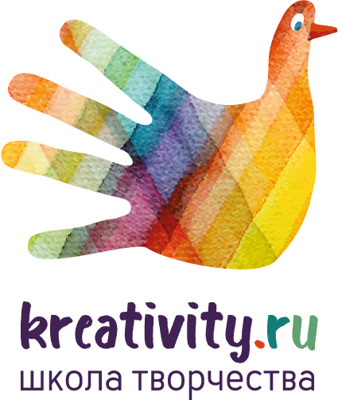

<!DOCTYPE html>
<html>
	<head>
		<title>Стартапы<title>
		<link rel="stylesheet" href="http://maxcdn.bootstrapcdn.com/bootstrap/3.3.7/css/bootstrap.min.css">
		<link rel="stylesheet" type="text/css" href="css/style.css">
		<link href="https://fonts.googleapis.com/css2?family=Roboto:ital,wght@0,100;0,300;0,400;0,500;0,700;0,900;1,100;1,300;1,400;1,500;1,700;1,900&display=swap" rel="stylesheet">
		<link rel="shortcut icon" href="img/favicon.ico" type="image/x-icon">
		<link rel="stylesheet" href="http://cdnjs.cloudflare.com/ajax/libs/font-awesome/4.6.3/css/font-awesome.min.css">
	</head>

	<body>
		
		<section class="main" id="up">
			<header class="main-header">
				<a href="index.html"></a>
				<ul class="header-list">
					<li><a href="index.html">Главная страница</a></li>
					<li><a href="educational.html">Образовательные площадки</a></li>
					<li><a href="plusminus.html">Плюсы и минусы</a></li>
					<li><a href="covid-19.html">Во время COVID-19</a></li>
					<li><a href="startup.html">Стартапы</a></li>
				</ul>
			</header>

			<section class="blockOne">
				<div class="startup">
					<h1>10 российских EdTech-стартапов, которые изменят сферу образования</h1>
				</div>
			</section>

			<div id="topNubex"></div>

			<section class="blockTwo">
				<div class="descSt">
					<p><strong>Образование сегодня</strong> — это не только «школа и университет» и далеко не только «тетрадки-учебники». Этого уже недостаточно. Онлайн-курсы, виртуальная реальность, искусственный интеллект — вот те инструменты, которые будут использовать учитель и ученик для эффективного результата. Рассказываем про 10 самых перспективных российских проектов, которые участвуют в конкурсе Edcrunch Awards 2019.</p>
					<p class="imgCenter"></p>
				</div>

				<div class="startups descSt">
					<h3 class="startupName">«Настолки» по программированию, робототехнике и электронике</h3>
					<p>
						Сейчас многие обучающие настольные игры рассчитаны на маленьких детей и слишком простоваты. Но вот игры от компании «ПРОСТОРОБОТ» простоватыми точно не назовешь. Они в игровой форме учат основам физики, электротехники программирования, развивают логику и помогают просто весело провести время.

						Например, в игре «Не закороти цепь» из карточек нужно выкладывать настоящие электронные цепи, а в игре «Атака Големов» нужно управлять роботами-големами с помощью команд, прямо как программы управляют компьютером.

						Игры предназначены для детей от 6 лет, базовые правила у них очень простые, но играть будет интересно и детям постарше, и даже взрослым.<br>

						<a href="https://www.simplerobot.org/">Сайт проекта</a>
						<p class="imgCenter"></p>
					</p>

					<h3 class="startupName">Электронная среда для онлайн-обучения</h3>

					<p>
						Русский язык для иностранцев очень сложный, и чтобы облегчить процесс обучения, предприниматель и разработчик Андрей Кузнецов разработал прототип мультиплатформенной образовательной среды «Langteach-online» для изучения русского как иностранного.

						С одной стороны, это отличная экосистема для учащегося, с другой стороны — прекрасное подспорье для преподавателя РКИ. Он обеспечивает полное погружение в языковую и культурную среду и объединяет в одном месте все необходимое для овладения языком: упражнения, словари, тексты, видеоматериалы, материалы для преподавателей и многое другое. Все это доступно дистанционно и с любых устройств, что позволяет никогда не прерывать обучение.

						Конкретно этот проект направлен именно на изучение русского как иностранного, но его формат можно использовать для обучения любым навыкам.<br>

						<a href="http://www.langteach-online.ru/">Страница проекта</a>
					</p>

					<h3 class="startupName">UX для дистанционных курсов</h3>

					<p>
						Когда создаешь дистанционный курс, трудно бывает понять, насколько он хорош: удобен ли интерфейс для учеников, понятен ли материал, достаточно ли полно обучающиеся осваивают материал. Чтобы создатели курсов могли собирать и анализировать такие данные, Сергей Замараев с командой запустил онлайн-сервис «Курсометр».

						«Курсометр» помогает получать от учащихся обратную связь — видеть, куда они кликают, на что смотрят, какие блоки пропускают или пролистывают, после каких тем вдруг бросают обучение. Все это помогает выявить слабые места и дорабатывать как оболочку курса, так и сами материалы.

						Все данные «Курсометр» упаковывает в удобные и наглядные отчеты. На их основе авторам советуют, что можно улучшить и переработать, чтобы повысить вовлеченность студентов и сделать обучение интересным, комфортным и эффективным.<br>

						<a href="https://coursometer.ru/">Сайт проекта</a>
						<p class="imgCenter"></p>
					</p>
					
					<h3 class="startupName">Интерактивный курс в «виртуальной реальности»</h3>

					<p>	
						Разработчик Андрей Матюков, руководитель проектов в студии разработки курсов СмартЛайн Мультимедиа, написал небольшой интерактивный курс «Откуда родом QR-коды», который объясняет принципы работы QR-кодов и учит их создавать.

						Курс подан в необычном формате. Теория «приходит» пользователю в виде сообщений в боковом чате, а сам ученик путешествует в виртуальной реальности — считывает QR-код в метро и потом сам создает его на сайте, не покидая при этом интерактивный курс. Это помогает отработать реальные практические навыки и наверняка запомнить материал.<br>

						<a href="https://lifel.ru/LOAD/QR/1/start.html">Сайт проекта</a>
						<p class="imgCenter"></p>
					</p>	

					<h3 class="startupName">Масштабный конкурс исследовательских работ для школьников</h3>

					<p>		

						В школах США и Европы детям часто дают практические и исследовательские проекты, которые учат их работать самостоятельно и развивают творческий потенциал. У нас в России проектная деятельность в школах развита слабо, и чтобы это исправить издательство «БИНОМ. Лаборатория знаний» организовало конкурс «Калейдоскоп исследовательских проектов» среди учеников начальных классов.

						Ученики подготовили много интересных проектов: «Современная сувенирная и интерьерная кукла», «Волшебный мир Э.Н.Успенского», «Галактический футбол», причем в некоторых проектах участвовали дети разного возраста.

						Детям конкурс помогает развить самостоятельность и активную жизненную позицию, учителям — повысить свою квалификацию и научиться организовывать в школах активную проектную деятельность.<br>

						<a href="http://lbz.ru/metodist/konkursy/kip/">Сайт проекта</a>
						<p class="imgCenter"></p>

					</p>
					
					<h3 class="startupName">Курс, который учит школьников вести собственные проекты</h3>

					<p>	
						Сейчас практически все профессиональная деятельность — это проекты. Над проектами работают программисты, инженеры, менеджеры и руководители. При этом в школах детей не учат проектированию — их максимум вовлекают в какие-то проекты, которые уже проработаны учителями.

						Учитель иностранных языков Наталья Романова захотела решить эту проблему и разработала интерактивный курс «Проектирование от А до Я», который учит школьников логике разработки проектов. Курс подходит для школьников 11–17 лет и учит с нуля продумывать и организовывать свой проект, правильно над ним работать и доводить начатое до конца.

					</p>
						
					<h3 class="startupName">Электронный курс, который учит магистрантов проводить научные исследования</h3>

					<p>
						Магистр отличается от бакалавра умением проводить самостоятельные научные исследования. У многих студентов-архитекторов с этим проблемы — они привыкли к визуально-образному стилю мышления, не умеют правильно выражать свои мысли и презентовать результаты работы.

						Александр Гущин, преподаватель Уральского государственного архитектурно-художественного университета, разработал курс «Методика, методология и презентация научной работы», который учит студентов магистратуры не просто творить, но и рассказывать о своей работе, развивает у них системное и критическое мышление.

						После прохождения этого курса магистранту будет гораздо проще написать диссертацию и в будущем как участвовать в научной деятельности, так и просто презентовать свои работы.

					</p>

					<h3 class="startupName">Творческая онлайн-школа</h3>

					<p>
						У онлайн-школы «Креативити» на нашем конкурсе целых два проекта: курсы «Уроки творчества» и «Макетирование для детей». Оба рассчитаны на целый год и помогают детям раскрыть творческий потенциал: научиться рисовать, лепить, вырезать, клеить, моделировать и просто фантазировать и творить.

						Это не просто онлайн-курсы из видеоуроков — в школе есть преподаватели, которые общаются с детьми и родителями, помогают выполнять задания, дают советы и отвечают на любые вопросы.

						Особенно эти курсы полезны для детей на домашнем обучении, которые не ходят в школу на уроки ИЗО и труда, но все равно хотят творить.<br>

						<a href="https://kreativity.ru/">Сайт проекта</a>
						<p class="imgCenter"></p>


					</p>
						
					<h3 class="startupName">Дистанционные курсы для школьников, которые помогут сдать ЕГЭ и освоить основы программирования</h3>

					<p>	
						Школьное образование должно быть доступным и эффективным. Ученики должны получать интересный, понятный и доступный контент, иметь возможность учиться дома и в удобное время. Родителям важна уверенность, что их дети счастливы, заинтересованы в учебе и смогут сдать экзамены и без репетиторов. А школьным учителям нужны максимально понятные и интересные программы, которые помогут обучать учеников эффективнее и снять с учителей нагрузку по подготовке уроков и проверке домашних заданий.

						Все это постарались реализовать в онлайн-школе BEEGEEK. На конкурс они предложили три курса: «Подготовка к ЕГЭ по математике», «Подготовка ЕГЭ по математике: экономическая задача» и «Основы программирования». Все эти курсы помогают лучше освоить материал, подготовиться к экзаменам и получить хорошую базу для поступления в вуз и будущей профессиональной деятельности.<br>

						<a href="https://beegeek.ru/">Сайт проекта</a>
						<p class="imgCenter"></p>
					</p>

					<h3 class="startupName">Пожарная безопасность в онлайн-формате</h3>

					<p>
						Формальное вузовское образование у многих ассоциируется с нудными лекциями и бесполезными тестами. Оксана Самкова из колледжа олимпийского резерва решила это изменить и разработала дистанционный курс «Теория горения и взрыва» для студентов, обучающихся по специальности «Пожарная безопасность».

						«Теория горения и взрыва» — профильный предмет у будущих пожарных, его нужно обязательно освоить, чтобы успешно сдать экзамены и в будущем работать по профессии. В вузах этот курс преподают в виде лекций, но это не помогает подготовиться к практическим занятиям и научить студентов работать самостоятельно. Поэтому Оксана и разработала дистанционный курс, который удовлетворяет всем образовательным требованиям, позволяет учиться даже из дома и автоматизирует проверку знаний. По факту с помощью этого курса студенты могут сами, без участия преподавателя освоить всю нужную информацию и успешно сдать экзамен.

						Edcrunch Awards — это первая в мире объектная (не институциональная) система оценки инноваций в сфере образования через конкурс. Подать заявки на участие в конкурсах Edcrunch Awards 2019 можно до 15 сентября на официальном сайте<br>

						<a href="https://2019.edcrunch.ru/special-projects/"> Edcrunch 2019.</a>
						<p class="imgCenter"></p>
					</p>	

				</div>
			</section>


		</section>
		<footer id="myFooter">
	        <div class="container">
	            <div class="row">
	                <div class="col-sm-3">
	                    <h2 class="logo"><a href="#"></a></h2>
	                </div>
	                <div class="col-sm-2">
	                    <h5>Начать</h5>
	                    <ul>
	                        <li><a href="#">Скачать сайт</a></li>
	                        <li><a href="#">Информация на сайте</a></li>
	                    </ul>
	                </div>
	                    <a href="https://vk.com/public194781328"><button type="button" class="btn btn-default">Связь с нами</button></a>
	                </div>
	            </div>
	        </div>
	        <div class="footer-copyright">
	            <p>© 2020 Copyright </p>
	        </div>
	    </footer>
		<script src="http://ajax.googleapis.com/ajax/libs/jquery/1.7.1/jquery.min.js"></script>	
		<script type="text/javascript">
  		  $(function() {
  		  $(window).scroll(function() {
		  if($(this).scrollTop() != 0) {
		  $('#topNubex').fadeIn();
		  } else {
		  $('#topNubex').fadeOut();
		  }
		  });
		  $('#topNubex').click(function() {
		  $('body,html').animate({scrollTop:0},700);
		  });
		  });
  		</script>	
	</body>
</html>